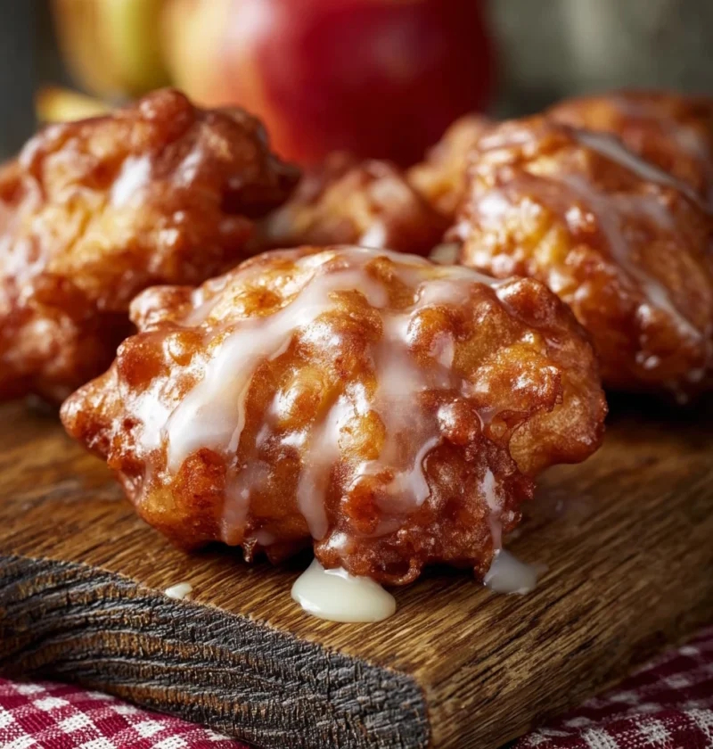

APPLE FRITTERS (WITH GLAZE)
Regular instructions. Serves several.

INGREDIENTS
| Ingredient | Amount |
|---|---|
| Full-Cream Milk | 420g + 60g (Glaze) |
| Active Dry Yeast | 2¼ Tsp |
| Caster Sugar | 50g |
| Honey | 2 Tbsp |
| Eggs | 3 |
| Plain Flour | 630g |
| Unsalted Butter (Cubed; Room-Temp) | 170g + 50g (Pan) |
| Granny Smith Apples | 4 (Large) |
| Lemon Juice | 2½ Tbsp |
| Brown Sugar | 110g |
| Cloves | ¼ Tsp |
| Ground Ginger | ½ Tsp |
| Cinnamon | 1 Tsp |
| Allspice | ¼ Tsp |
| Corn Flour | 1 Tsp |
| Vegetable Oil (For Frying) | ~½ Large Pot |
| Powdered Sugar (For Glaze) | 300g |
EQUIPMENT
| Equipment |
|---|
| Mixer w/ Dough Hook |
| Thermometer (Optional) |
METHOD
- In a microwave-proof bowl or jug heat up 420g milk to 40°-46° C.
- In a bowl (particularly one for use with a mixer) combine the warmed milk, 2¼ tsp active dry yeast, 50g caster sugar, and 2 tbsp honey. Whisk slightly to combine then let it sit for about 10 minutes or until foamy.
- In another bowl lightly beat 3 eggs and add it to the dough mixture along with 630g plain flour. Add 170g room-temperature unsalted butter to the dough mixture. Using the dough hook, mix the dough for about 6 minutes on medium-high speed, scraping down the sides of the bowl about half-way in. The dough shoul be ultra-soft and ultra-sticky; do not add extra flour.
- Scrape down the sides of the bowl before wrapping in plastic wrap and letting the dough rise at room temperature for about 1 hour or until it has doubled in size.
- While waiting for the dough to rise, peel the 4 large Granny Smith apples, core them, then cut them into small bite-sized chunks. In a medium bowl add the apple chunks along with 2½ tbsp lemon juice and toss them together.
- In a large pan add 50g unsalted butter and melt it over medium heat until light brown. Add the apple chunks and mix with the butter, then add 110g brown sugar along with some spices (¼ tsp cloves, ½ tsp ground ginger, 1 tsp cinnamon, and ¼ tsp allspice). Simmer, tossing occasionally, for about 4-5 minutes or until the apples have just about cooked through.
- Thicken the apple mixture by, whisking together and then adding, 1 tsp corn flour and 60g warm water. Cook for another minute or until very thick and set aside to cool completely.
- Using extra flour to coat the table or mat as needed, stretch the dough (after it has doubled in size from step 4) into a rectangular shape. Add the cooled apple mixture on top of the dough, leaving a bit of space around the edges. Fold one side of the dough over on itself until the edge meets half-way across the dough, then fold the other side on top of it. Fiddle around with the dough to move and coat the apple mixture inside of it, such as by balling it up and slightly tossing it.
- Place the dough back into the bowl and cover it again, then let it rise for another hour at room temperature or until it has doubled in size.
- Re-flouring the table or mat as needed, put the risen dough on the table and sprinkle flour on top of it. Roll out until the dough is about 2.5cm thick. Cut circles out of the dough and place nearby. Re-roll the left over dough and repeat as needed.
- In a large deep pot, fill it up with vegetable oil until about half-way. Heat up the vegetable oil to 190° C. Add the dough circles (however many will fit), stretching them out a little bit before dropping them into the oil, for about 90 seconds. Flip them over, then cook for another 90 seconds or until golden brown and crispy, moving them onto a wire rack (with a baking sheet to prevent drips). Repeat until all dough circles have been cooked.
- For a glaze, simply whisk 300g powdered sugar and 60g milk together in a bowl until combined with no lumps. Add more milk to thin it, add more sugar to thicken it.